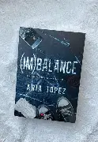

J'aime beaucoup lire. Un de mes livres préférés est "(IM)BALANCE" de Aria Topez,il y a aussi des livres que j'ai beaucoup aimer comme "Tant Que Fleuriront Les Citronniers" de Zoufra Katouh, "Endless Fall" de Louise Langlois ou encore "Meurtre mode d'emploi" de Holly Jackson.
Quand j'étais petite j'aimais lire mais arriver au college j'ai completement arrêter de lire car lire les livres que les professeurs nous donnaient en classe m'a fait détester la lecture , mais en fin 2023 j'ai découvert l'application Wattpad et j'ai donc recommencer à lire (BEAUCOUP), je passais des nuits blanches à lire .Puis j'ai commencais à acheter des livres en format papier et jusqu'à maintenant je contionue de lire c'est devenue une passion,et je continue aussi de lire sur Wattpad .
